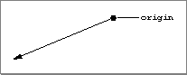

Rays
QuickDraw 3D defines a ray as a point of origin and a direction. A ray is defined by theTQ3Ray3Ddata type. Figure 4-9 shows a ray.
typedef struct TQ3Ray3D { TQ3Point3D origin; TQ3Vector3D direction; } TQ3Ray3D;
Field Description
origin- The origin of the ray.
direction- The direction of the ray.